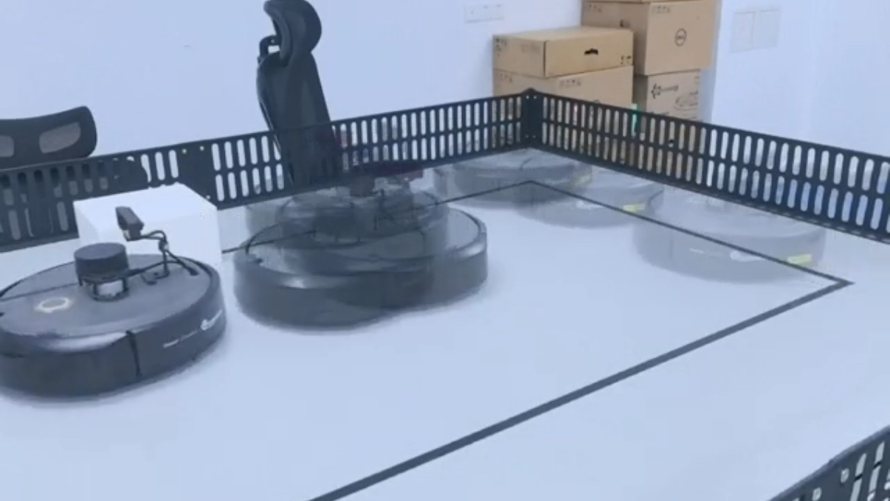

TurtleBot Autonomous Navigation
Advanced Robotics Laboratory, GTIIT, 2024
Course: Advanced Robotics Laboratory (034401), Prof. Damiano Padovani
Developed a complete autonomous navigation and obstacle avoidance system for TurtleBot 4 using ROS2.
Technical Implementation
- ROS2 System Architecture: Modular software stack within ROS2 Humble framework.
- Motion Control: Python-based nodes publishing Twist messages with closed-loop velocity control.
- Sensor Integration: Asynchronous processing of OAK-D depth camera and 2D LiDAR data.
- Autonomous Logic: Finite State Machine transitioning between PATH_TRACKING and OBSTACLE_AVOIDANCE.
- Path Tracking: PID control loop with visual servoing for line following.
- Reactive Avoidance: LiDAR-based collision avoidance with circumnavigation maneuvers.
